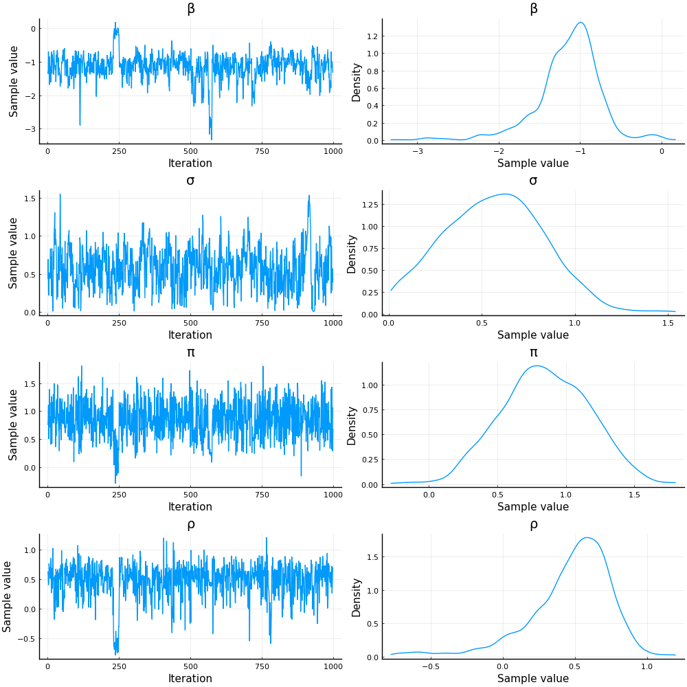
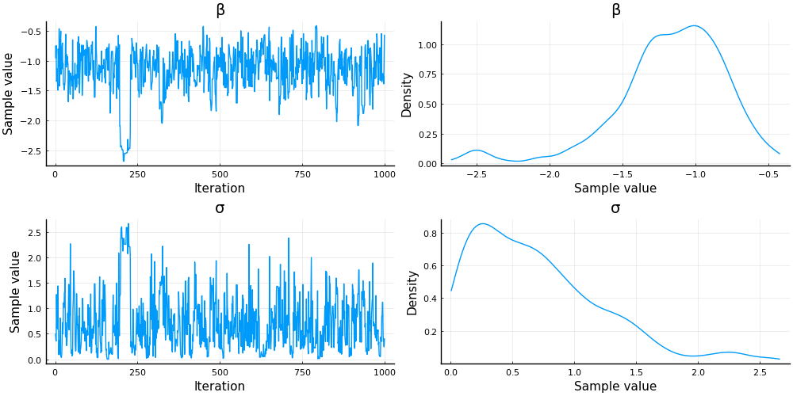

This work is licensed under a Creative Commons Attribution-ShareAlike 4.0 International License
using Plots, Distributions, StatsPlots
Plots.pyplot()
Plots.PyPlotBackend()
Introduction¶
Traditional bayesian methods require a fully specified statistical model, so that a likelihood can be calculated. In particular, this requires specifying the distribution of error terms. In IO, and economics more broadly, many applied models avoid placing distributional assumptions on error terms, and instead use GMM for estimation.
There are two ways to convert a GMM model into something suitable for Bayesian methods. One is to just add distributional assumptions to the error terms. applies this approach to a random coefficients demand model.
A second approach is the Quasi-Bayesian approach of . In this approach, you simply use the GMM objective function in place of the likelihood. We will look at it in some detail.
Random Coefficients IV Logit¶
As a working example, we’ll use a random coefficients multinomial logit with endogeneity. To keep things simple for illustrustration, we’ll assume that there’s a single endogenous variable, $x \in \mathbb{R}^J$, and market shares are given by
The moment condition will be
Fully specified likelihood¶
One way to estimate the model is to fully specify a parametric likleihood. In the simulated data, we know the correct likelihood, so the results we get will be about as good as we can possibly hope to get. Compared to GMM, the full likelihood approach here assumes that (conditional on the instruments, $z$), the market demand shocks are normally distributed,
The endogenous variable, $x$, has a normal first stage,
and to keep the number of parameters small, we’ll impose $\Pi=\pi I_J$ and $\Xi=\rho I_J$.
Finally, we’ll assume the observed market shares $s_j$ come from $M$ draws from a Multinomial distribtion
where $s^*()$ is the share function implied by the random coefficients model. This approach removes the need to solve for $\xi$ as a function of $s$ and the other parameters. However, it has the downsides of needing to know $M$, and needing to sample $\xi$ along with the parameters to generate the posterior.
We implement the above model in Turing.jl. This gives a convenient way to both simulate the model and compute the posterior. However, it has the downside of putting an extra layer of abstraction between us and the core computations. This ends up costing us a bit of computation time, and arguably making the posterior calculation harder to debug and extend.
using Turing, FastGaussQuadrature, LinearAlgebra, JLD2, NNlib
@model rcivlogit(x=missing, z=missing, s=missing,
M=100, ν=gausshermite(12),
param=missing, N=10,J=1, ::Type{T}=Float64) where {T <: Real} =
begin
if x === missing
@assert s===missing && z===missing
x = Matrix{T}(undef, J, N)
s = Matrix{Int64}(undef,J+1,N)
z = randn(J,N)
end
J, N = size(x)
ξ = Matrix{T}(undef, J, N)
if !ismissing(param)
β = param.β
σ = param.σ
Σx = param.Σx
π = param.π
ρ = param.ρ
Ω = param.Ω
else
# Priors
β ~ Normal(0, 20.0)
σ ~ truncated(Normal(1.0, 10.0),0, Inf)
ρ ~ Normal(0, 20.0)
Σx ~ Wishart(J+2, diagm(ones(J))*1/(2*0.001))
Ω ~ Wishart(J+2, diagm(ones(J))*1/(2*0.001))
π ~ Normal(0.0, 20.0)
end
# The likelihood
ξ .~ MvNormal(zeros(J), Symmetric(Ω))
μ = zeros(typeof(x[1][1]*β), J + 1 , length(ν[1]))
for i in 1:N
x[:,i] ~ MvNormal(π*z[:,i] + ρ*ξ[:,i], Symmetric(Σx))
μ[1:J,:] .= x[:,i]*β + ξ[:,i] .+ x[:,i]*σ*sqrt(2)*ν[1]'
μ = softmax(μ, dims=1)
p = (μ*ν[2])/sqrt(Base.π)
s[:,i] ~ Multinomial(M,p)
end
return(x=x, z=z, s=s, ξ=ξ)
end
# some parameters for simulating data
J = 2
pm = (β=-1.0, σ=0.1, ρ=0.5, Σx=diagm(ones(J)), Ω=I+0.5*ones(J,J), π=1.0)
N = 20
M = 100
# simulate the data
data=rcivlogit(missing, missing ,missing, M, gausshermite(3), pm, N, J, Float64)();
# not sure why x, s, z are Array{Any}, but it will cause problems later, so fix it
data = (x=Float64.(data.x), s=Int64.(data.s), z=Float64.(data.z), ξ=Float64.(data.ξ))
(x = [-0.8291668656715948 0.8114037841724092 … -2.493005300292991 -1.735388
82102078; -1.9459132449679515 -0.5991443951465847 … -1.5243336512421664 1.4
27601236461319], s = [25 47 … 54 62; 52 32 … 24 7; 23 21 … 22 31], z = [-0.
16462757602447928 -1.02062940510034 … 0.20135486439450068 -1.37476878086003
5; -0.21948746864078345 0.7966223359730757 … -0.05976092739945117 0.4069354
101999431], ξ = [-0.949184612573837 2.270710162643411 … -1.2875415745627992
-0.7480245491443309; -0.773157795731879 0.4941916451642972 … -1.3757647826
041028 0.6742938892206334])
Some remarks on the code
-
When a Turing model is passed missing arguments, it samples them from the specified distributions. When the arguments are not missing, they’re treated as data and held fixed while calculating the posterior.
-
We use Gauss Hermite quadrature to integrate out the random coefficient. 3 integration points is not going to calculate the integral very accurately, but we will use the same integration approach during estimation. so it will work out well.
The Wishart prior distributions for the covariance matrices are not entirely standard. The inverse Wishart distribution is the conjugate prior for the covariance matrix of a Normal distribution, and is a common choice. However, when using HMC for sampling, conjugate priors do not matter. The modern view is that the inverse Wishart puts too much weight on covariances with high correlation, and other priors are preferred. The Wishart prior follows the advice of , and helps to avoid regions with degenerate covariance matrices (which were causing numeric problems during the tuning stages of NUTS with other priors, like the LKJ distribution).
Results¶
We can sample from the posterior with the following code. It takes some time to run.
model = rcivlogit(data.x, data.z, data.s, M, gausshermite(3), missing, N,J)
chain = Turing.sample(model, NUTS(0.65), 1000, progress=true, verbose=true)
dir = @__DIR__
JLD2.@save "$dir/turing.jld2" chain model data
Let’s look at the posteriors. The chain also contains posteriors for all $JN$ values of $\xi$, which are not going to be displayed.
dir = @__DIR__
JLD2.@load "$dir/turing.jld2" chain model data
chkeys = Symbol[]
for k in keys(pm)
for ck ∈ filter(x->occursin(Regex(String(k)),String(x)), keys(chain))
push!(chkeys, ck)
end
end
display(plot(chain[chkeys]))
display(describe(chain[chkeys])[1])
Summary Statistics
parameters mean std naive_se mcse ess rhat
e ⋯
Symbol Float64 Float64 Float64 Float64 Float64 Float64
⋯
β -1.2436 0.4066 0.0129 0.0291 187.0492 0.9991
⋯
σ 0.6761 0.3108 0.0098 0.0206 247.3818 0.9991
⋯
ρ 0.4569 0.3015 0.0095 0.0179 244.5416 0.9992
⋯
Σx[1,1] 1.4559 0.8060 0.0255 0.0398 408.6881 1.0019
⋯
Σx[2,1] 0.5549 0.5705 0.0180 0.0246 507.8836 0.9991
⋯
Σx[1,2] 0.5549 0.5705 0.0180 0.0246 507.8836 0.9991
⋯
Σx[2,2] 2.3462 1.2436 0.0393 0.0593 363.2574 0.9990
⋯
Ω[1,1] 2.6946 1.7484 0.0553 0.0960 295.5635 0.9990
⋯
Ω[2,1] 1.2312 1.0636 0.0336 0.0477 443.6418 0.9990
⋯
Ω[1,2] 1.2312 1.0636 0.0336 0.0477 443.6418 0.9990
⋯
Ω[2,2] 3.1023 2.2316 0.0706 0.1431 175.3450 0.9991
⋯
π 0.8452 0.3464 0.0110 0.0157 380.0702 0.9991
⋯
1 column om
itted

We can see that the chain mixed pretty well. The posterior of the covariance matrices are somewhat high, but the other posteriors of the other parameters appear centered on their true values. Poorly estimated covariances are typical for this model (and many other models), regardless of estimation method.
DynamicHMC Implementation¶
DynamicHMC.jl is a useful alternative to Turing.jl. With DynamicHMC, you must write a function to evaluate the log posterior. This is arguably slightly more work than Turing’s modeling language (although it avoids needing to learn Turing’s language), but it also gives you more control over the code. This tends to result in more efficient code.
using DynamicHMC, Random, LogDensityProblems, Parameters, TransformVariables, Distributions, MCMCChains
defaultpriors = (β=Normal(0,20),
σ=truncated(Normal(0, 10), 0, Inf),
π=Normal(0,20),
ρ=Normal(0,20),
Σx=Wishart(J+2, diagm(ones(J))*1/(2*0.001)),
Ω =Wishart(J+2, diagm(ones(J))*1/(2*0.001)))
macro evalpriors(priors)
first = true
expr = :(1+1)
for k in keys(defaultpriors)
if first
expr = :(logpdf($(priors).$k, $k))
first = false
else
expr = :($expr + logpdf($(priors).$k, $k))
end
end
return(esc(expr))
end
# We define a struct to hold the data relevant to the model
struct RCIVLogit{T,Stype}
x::Matrix{T}
z::Matrix{T}
s::Matrix{Stype}
N::Int64
J::Int64
ν::typeof(gausshermite(1))
priors::typeof(defaultpriors)
end
# evaluate the log posterior
function (d::RCIVLogit)(θ)
@unpack ξ, β, σ, π, ρ, sξ, uξ, sx, ux = θ
@unpack x, z, s, N, J, ν = d
T = typeof(d.x[1,1]*β)
Σx =Symmetric(ux'*Diagonal(exp.(sx).^2)*ux)
Ω = Symmetric(uξ'*Diagonal(exp.(sξ).^2)*uξ)
# priors
logp=@evalpriors(d.priors)
# loglikelihood
logp += loglikelihood(MvNormal(zeros(J), Ω), ξ)
logp += loglikelihood(MvNormal(zeros(J), Σx), x - π*z - ρ*ξ)
μ = zeros(T, J + 1 , length(ν[1]))
for i in 1:N
@views μ[1:J,:] .= x[:,i]*β + ξ[:,i] .+ x[:,i]*σ*sqrt(2)*ν[1]'
μ = softmax(μ, dims=1)
p = (μ*ν[2])/sqrt(Base.π)
logp += logpdf(Multinomial(sum(s[:,i]), p),s[:,i])
end
return(logp)
end
ν = gausshermite(3)
prob = RCIVLogit(data.x, data.z, data.s, N, J,ν , defaultpriors)
θ0 = ( ξ=data.ξ, β=pm.β, σ=pm.σ, π=pm.π, ρ=pm.ρ,
sξ = log.(sqrt.(diag(pm.Ω))),
uξ=cholesky(pm.Ω ./ sqrt.(diag(pm.Ω)*diag(pm.Ω)')).U,
sx = log.(sqrt.(diag(pm.Σx))),
ux=cholesky(pm.Σx ./ sqrt.(diag(pm.Σx)*diag(pm.Σx)')).U
)
prob(θ0)
# A transformation from ℝ^(# parameters) to the parameters
# see Transformations.jl
t= as((ξ=as(Array,asℝ,J,N),
β = asℝ, σ=asℝ₊, π=asℝ, ρ=asℝ,
sξ=as(Array,asℝ,J),
uξ=CorrCholeskyFactor(J),
sx=as(Array,asℝ,J),
ux=CorrCholeskyFactor(J)) )
x0 = inverse(t, θ0)
# wrap our logposterior and transform into the struc that DynamicHMC
# uses for sampling
P = TransformedLogDensity(t, prob)
∇P = ADgradient(:ForwardDiff, P);
warmup_stages = default_warmup_stages(;doubling_stages=2, M=Symmetric)
results = DynamicHMC.mcmc_keep_warmup(Random.GLOBAL_RNG, ∇P, 1000;
initialization = (q = x0, ),
reporter = LogProgressReport(nothing, 25, 15),
warmup_stages=warmup_stages)
JLD2.@save "$dir/dhmc.jld2" results
JLD2.@load "$dir/dhmc.jld2" results
post = transform.(t,results.inference.chain)
p = post[1]
names = vcat([length(p[s])==1 ? String(s) : String.(s).*string.(1:length(p[s])) for s in keys(p)]...)
vals = hcat([vcat([length(v)==1 ? v : vec(v) for v in values(p)]...) for p in post]...)'
chain = MCMCChains.Chains(reshape(vals, size(vals)..., 1), names)
display(plot(chain[["β","σ","ρ","π"]]))
display(describe(chain[["β","σ","ρ","π"]])[1])
Summary Statistics
parameters mean std naive_se mcse ess rhat
Symbol Float64 Float64 Float64 Float64 Float64 Float64
β -1.1455 0.4021 0.0127 0.0357 76.3266 1.0292
σ 0.5666 0.2756 0.0087 0.0186 195.7986 0.9990
π 0.8488 0.3193 0.0101 0.0151 518.1321 0.9990
ρ 0.4704 0.2925 0.0093 0.0231 156.4125 1.0056

Quasi-Bayesian¶
Consider the following GMM setup. We have a data-depenendent function $g_i(\theta)$ such that $\Er[g_i(\theta_0)] = 0$ . Let the usual GMM estimator be
Assume the usual regularity conditions so that
where $D = D_\theta \Er[g_i(\theta_0)]$ and $\frac{1}{\sqrt{n}} \sum g_i(\theta_0) \to N(0, \Omega)$.
Quasi-Bayesian approaches are based on sampling from a quasi-posterior that also converges to $N\left(0, (D’WD)^{-1}(D’W\Omega W D) (D’WD)^{-1} \right)$ as $n\to \infty$.
Let $\Sigma = (D’WD)^{-1}(D’W\Omega W D) (D’WD)^{-1}$. Note that the log density of the asymptotic distribution is
Compare that to minus the GMM objective function (which we’ll denote by $\log(p_n(\theta)$)
If we take a second order Taylor expansion,
and complete the square
where $C$ is a constant that does not depend on $\theta$.
From this we can see that if we treat $\log(p_n(\theta))$ as a log posterior distribution, we get that that conditional on the data, the quasi-posterior is approximately normal with a data dependent mean and variance $D’WD$.
Finally, note that the usual asymptotic expansion of the GMM objective gives
then
That is, the quasi-posterior is approximately normal with mean equal to the usual GMM estimate and variance $(D’WD)^{-1}$.
If we treat the quasi-posterior and as a real posterior, the quasi-posterior mean or median will be consistent since they each approach $\hat{\theta}^{GMM}$ and $\hat{\theta}^{GMM}$ is consistent.
Additionally, if we use quasi-posterior credible intervals for inference, they may or may not be consistent. In general, the quasi-posterior variance, $(D’WD)^{-1}$, differs from the asymptotic variance, $(D’WD)^{-1}(D’W\Omega W D)(D’WD)^{-1}$, and quasi-posterior credible intervals will not be consistent. However, if we use an efficient weighting matrix, $W=\Omega^{-1}$, then the quasi-posterior credible intervals will be consistent.
See these notes for more information, or for complete details.
Implementation¶
To compute moment conditions, we need to solve for $\xi$ given the parameters. Here’s the associated code. It’s similar to what we used in BLPDemand.jl.
using DynamicHMC, Random, LogDensityProblems, Parameters, TransformVariables, Distributions, ForwardDiff, NLsolve
function share(δ::AbstractVector, σ, x::AbstractVector, ν::typeof(gausshermite(1)))
J = length(δ)
S = length(ν[1])
s = zeros(promote_type(eltype(δ), eltype(σ)),size(δ))
si = similar(s)
@inbounds for i in 1:S
si .= δ + σ*x*ν[1][i]
# to prevent overflow from exp(δ + ...)
simax = max(maximum(si), 0)
si .-= simax
si .= exp.(si)
si .= si./(exp.(-simax) + sum(si))
s .+= si*ν[2][i]
end
s .+= eps(eltype(s))
return(s)
end
function delta(s::AbstractVector{T}, x::AbstractVector{T},
σ::T, ν::typeof(gausshermite(1))) where T
tol = 1e-6
out = try
sol=NLsolve.fixedpoint(d->(d .+ log.(s) .- log.(share(d, σ, x, ν))),
log.(s) .- log.(1-sum(s)),
method = :anderson, m=4,
xtol=tol, ftol=tol,
iterations=100, show_trace=false)
sol.zero
catch
log.(s) .- log.(1-sum(s))
end
return(out)
end
# Use the implicit function theorem to make ForwardDiff work with delta()
function delta(s::AbstractVector, x::AbstractVector,
σ::D, ν::typeof(gausshermite(1))) where {D <: ForwardDiff.Dual}
σval = ForwardDiff.value.(σ)
δ = delta(s,x,σval, ν)
∂δ = ForwardDiff.jacobian(d -> share(d, σval, x, ν), δ)
∂σ = ForwardDiff.jacobian(s -> share(δ, s..., x, ν), [σval])
out = Vector{typeof(σ)}(undef, length(δ))
Jv = try
-∂δ \ ∂σ
catch
zeros(eltype(∂σ),size(∂σ))
end
Jc = zeros(ForwardDiff.valtype(D), length(σ), ForwardDiff.npartials(D))
for i in eachindex(σ)
Jc[i,:] .= ForwardDiff.partials(σ[i])
end
Jn = Jv * Jc
for i in eachindex(out)
out[i] = D(δ[i], ForwardDiff.Partials(tuple(Jn[i,:]...)))
end
return(out)
end
delta (generic function with 2 methods)
Now the code for the quasi-posterior.
using DynamicHMC, Random, LogDensityProblems, Parameters, TransformVariables, Distributions
defaultpriors = (β=Normal(0,20),
σ=truncated(Normal(0, 10), 0, Inf))
struct RCIVLogitQB{T,Stype}
x::Matrix{T}
z::Matrix{T}
s::Matrix{Stype}
N::Int64
J::Int64
ν::typeof(gausshermite(1))
priors::typeof(defaultpriors)
W::Matrix{T}
end
macro evalpriors(priors)
first = true
expr = :(1+1)
for k in keys(defaultpriors)
if first
expr = :(logpdf($(priors).$k, $k))
first = false
else
expr = :($expr + logpdf($(priors).$k, $k))
end
end
return(esc(expr))
end
function (d::RCIVLogitQB)(θ)
@unpack β, σ = θ
@unpack x, z, s, N, J, ν, priors, W = d
T = typeof(x[1,1]*β)
# priors
logp = @evalpriors(d.priors)
# quasi-loglikelihood
m = zeros(T, J*J)
for i in 1:N
ξ = delta(s[:,i], x[:,i], σ, ν) - x[:,i]*β
m .+= vec(ξ*z[:,i]')
end
m ./= N
logp += -0.5*N*m'*W*m #logpdf(MvNormal(zeros(length(m)), W), m)
return(logp)
end
gh = gausshermite(3)
ν = (gh[1],gh[2]/sqrt(Base.π))
prob = RCIVLogitQB(data.x, data.z, max.(1,data.s[1:J,:])./M, N, J,ν , defaultpriors, diagm(ones(J*J)))
θ0 = (β=pm.β, σ=pm.σ )
prob(θ0)
t=as((β = asℝ, σ=asℝ₊))
x0 = inverse(t, θ0)
P = TransformedLogDensity(t, prob)
∇P = ADgradient(:ForwardDiff, P)
LogDensityProblems.logdensity_and_gradient(∇P, x0);
The chain here actually takes very little time to run, but we still cache the results.
warmup=default_warmup_stages(stepsize_search=nothing, doubling_stages=2)
results = DynamicHMC.mcmc_keep_warmup(Random.GLOBAL_RNG, ∇P, 1000;
initialization = (q = x0, ϵ=1e-5 ),
reporter = LogProgressReport(nothing, 25, 15),
warmup_stages =warmup)
JLD2.@save "$dir/qb.jld2" results
JLD2.@load "$dir/qb.jld2" results
post = transform.(t,results.inference.chain)
p = post[1]
names = vcat([length(p[s])==1 ? String(s) : String.(s).*string.(1:length(p[s])) for s in keys(p)]...)
vals = hcat([vcat([length(v)==1 ? v : vec(v) for v in values(p)]...) for p in post]...)'
chain = MCMCChains.Chains(reshape(vals, size(vals)..., 1), names)
display(describe(chain[["β","σ"]])[1])
display(plot(chain[["β","σ"]]))
Summary Statistics
parameters mean std naive_se mcse ess rhat
Symbol Float64 Float64 Float64 Float64 Float64 Float64
β -1.2810 0.3689 0.0117 0.0257 154.9630 1.0000
σ 0.9447 0.6902 0.0218 0.0512 136.3898 1.0009
The quasi-posterior means look okay. The standard deviation and quantiles are not consistent because we didn’t use an efficient weighting matrix above. Let’s use one and repeat.
σ = mean(chain[:σ])
β = mean(chain[:β])
m = zeros(J*J, N)
for i in 1:N
ξ = delta(prob.s[:,i], prob.x[:,i], σ, ν) - prob.x[:,i]*β
m[:,i] .= vec(ξ*prob.z[:,i]')
end
W = inv(cov(m'))
prob = RCIVLogitQB(data.x, data.z, max.(1,data.s[1:J,:])./M, N, J,ν , defaultpriors,W)
θ0 = (β=pm.β, σ=pm.σ )
prob(θ0)
P = TransformedLogDensity(t, prob)
∇P = ADgradient(:ForwardDiff, P)
LogDensityProblems.logdensity_and_gradient(∇P, x0);
warmup=default_warmup_stages(stepsize_search=nothing, doubling_stages=2)
results = DynamicHMC.mcmc_keep_warmup(Random.GLOBAL_RNG, ∇P, 1000;initialization = (q = x0, ϵ=1e-5 ), reporter = LogProgressReport(nothing, 25, 15), warmup_stages =warmup)
JLD2.@save "$dir/qbw.jld2" results
JLD2.@load "$dir/qbw.jld2" results
post = transform.(t,results.inference.chain)
p = post[1]
names = vcat([length(p[s])==1 ? String(s) : String.(s).*string.(1:length(p[s])) for s in keys(p)]...)
vals = hcat([vcat([length(v)==1 ? v : vec(v) for v in values(p)]...) for p in post]...)'
chain = MCMCChains.Chains(reshape(vals, size(vals)..., 1), names)
display(describe(chain[["β","σ"]])[1])
display(plot(chain[["β","σ"]]))
Summary Statistics
parameters mean std naive_se mcse ess rhat
Symbol Float64 Float64 Float64 Float64 Float64 Float64
β -1.1734 0.3905 0.0123 0.0370 71.9467 1.0124
σ 0.7136 0.5478 0.0173 0.0480 94.2200 1.0084

These posterior standard deviations and quantiles can be used for inference.
About¶
This meant to accompany these slides on Bayesian methods in IO.
This document was created using Weave.jl. The code is available in on github.